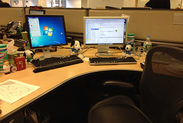

My Gap
Need to find a way to keep my plant on the table in an open space office. With only a 5 feet long table, after I put a computer and 2 monitors on the table, there is not much room left for a plant.
- I recently moved from a private office to an open space office. With this move, I lost the luxury of a window where I can keep my plant and a lot of space where I can lay around my stuff. I have to pile up 2 monitors, a laptop, a phone, staples, and books on a 6 feet table.
- I have at least 6 co-workers who experienced the same problem as me. We even discussed where we were going to keep our plants before we moved.
- I plan to create a simple support thing for my plant. I think this can be done if I find right materials.
- I am a web designer. However, I'm intrigued by the idea that I put together some physical that will help manage my everyday life.